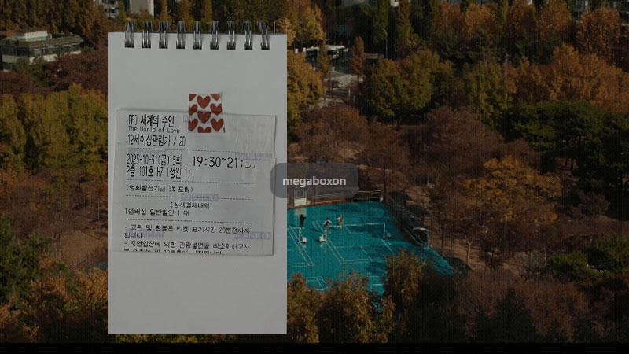
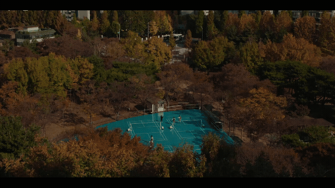

세계의 주인
2025 | 드라마 | 감독 윤가은 | 출연 서수빈, 장혜진

NOTE
주인이의 주변을 통해서 주인이를 들여다보게 되는 영화. (남동생 해인의 마술쇼처럼) 짠-하고 사라지는 건 없고 결국 어디선가 들통나기 마련이나 결국에는 긴 격려와 응원으로 마무리되는 사람 사는 이야기. 주인이가 마주하는 다양한 얼굴들을 보면서 그게 혹 나의 표정은 아닐까 되돌아보게 되고, 강한 분노 앞에서 무기력해지는 나를 발견하기도 했다. 제대로 알아야 하고, 정확하게 표현해야 하며, 잘 돌봐야 한단다..
밑도 끝도 없이 밝은 친구가 있었다. 쟤는 뭐가 그렇게 좋을까, 심통 어린 마음으로 대한 적도 많았다. 그러다 우연히 멀리서 걸어가는 그 친구의 표정 없는 얼굴을 보는 순간 슬퍼졌던 기억이 있다. 미안했다. 그 친구가 생각난다. 잘 지내고 있을까.
Quote
“하나의 세계가 어떻게 작동하는 지를 보려면 같이 움직이는 것을 봐야 되니까요. 때로는 정말 멀리서 찍어보고 싶었기도 하고, 영화가 그것을 요구한다고 생각했던 거 같아요. ··· 옆에서 같이 숨 쉬는 것처럼 있다가 좀 멀어졌을 때 그것이 또 어떻게 다가오는지에 대한 효과를 주고 싶었어요” -윤가은 감독 인터뷰 중에서
